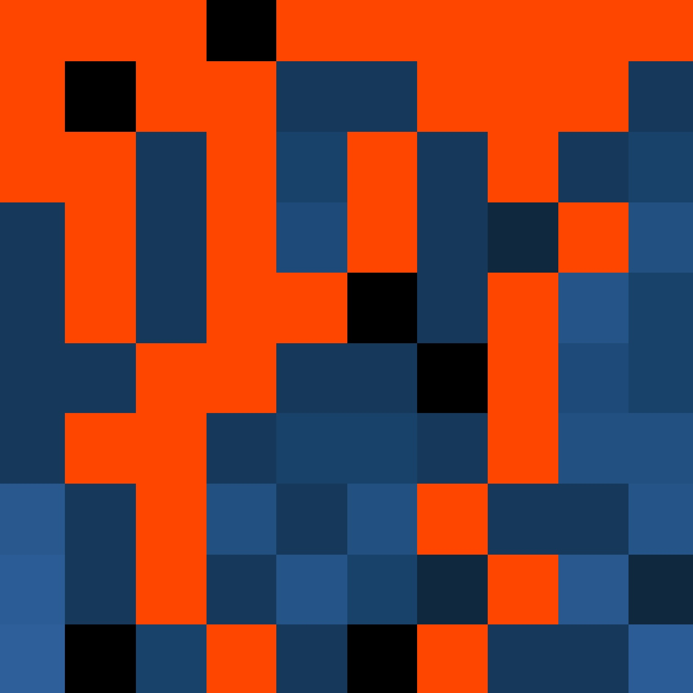
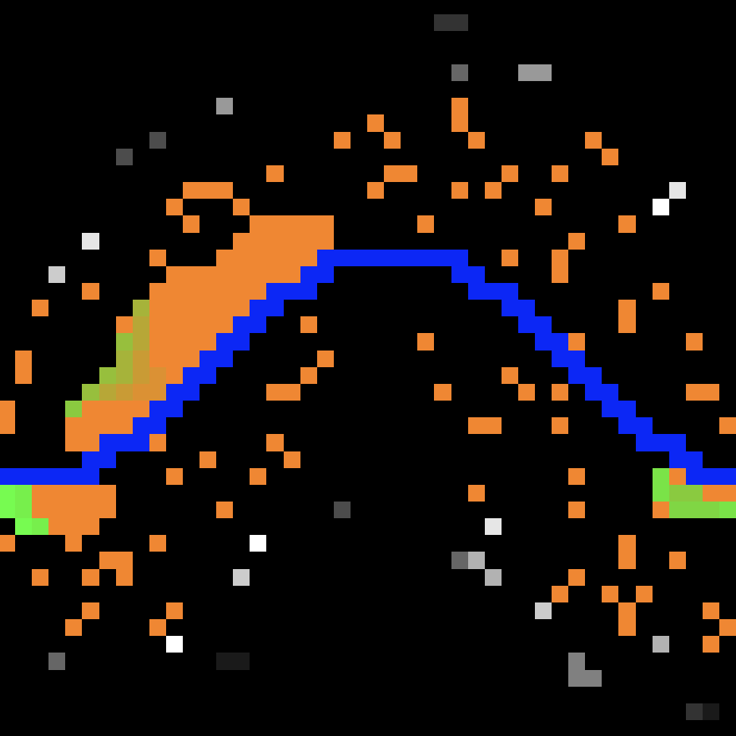
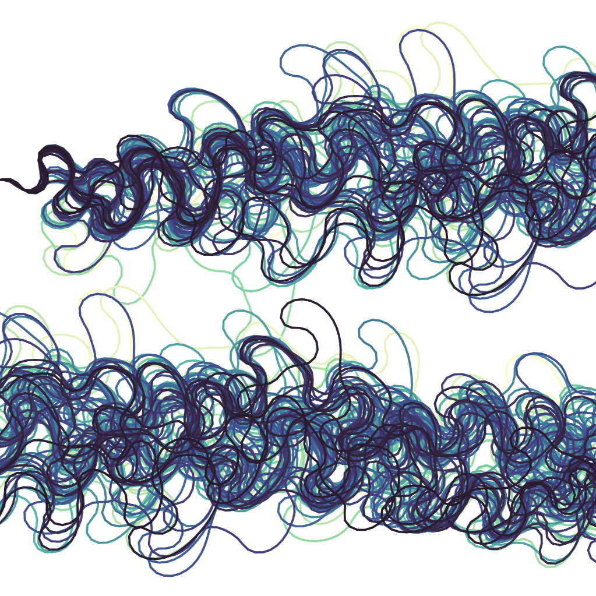
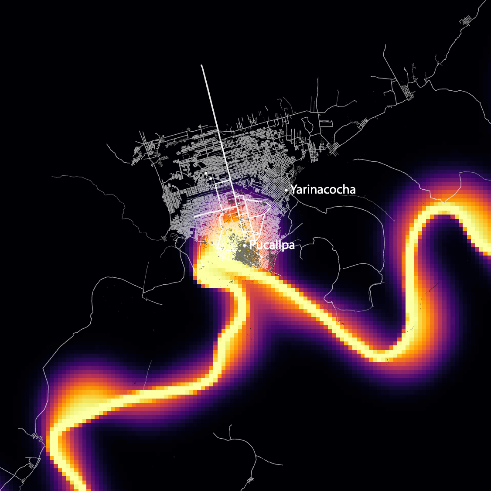

A percolation transition for Scheidegger river networks (2026)
Coupling Scheidegger's random-walk drainage network to a minimal rainfall-and-storage rule yields a directed spanning transition: whether overflow links a basin from its headwaters to the sea is a percolation problem, with a critical curve in the rainfall–storage plane.
Bulk-Dissipative Sandpile (2026)
A Bak–Tang–Wiesenfeld sandpile where toppled grains leave the system entirely instead of being distributed to neighbors, a discrete-grain analog of detachment-limited erosion.

Meanderlife (2026)
Water attracts biological agents, but water is dynamic. As a river, it meanders. Here we study how agents behave when the water they depend on keeps moving.

Meander Cutoffs Induce Chaos (2025)
We show that neck cutoffs alone are sufficient to produce chaotic dynamics in kinematic river channel evolution, imposing a finite predictability horizon on planform modeling.

Geomorphic Risk Maps for River Migration (2024)
We use probabilistic modeling to map where the Ucayali River is likely to erode over the next 50 years.